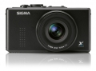
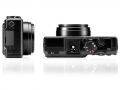

器材库 > 不可换镜头数码相机 > DP1s

规格总览
发布日期
2009-10-02
厂家推荐价格
5,000.00 （人民币）
影像规格
影像传感器
Foveon X3
影像传感器尺寸
20.7x13.8mm
总像素
1460万
有效像素
1400万
影像处理器
Foveon X3
静态图像尺寸
2640 × 1760 ; 2640×1760 ; 1872 x 1248 ; 1312 x 880
静态图像格式
JPEG, RAW
画幅比
3:2, 16:9
短片尺寸
320 × 240（30 fps）
短片格式
AVI
镜头和对焦
镜头结构
6片/5组
非球面镜片
1片
低/超低色散镜片
2片
焦距
16.6mm
等效35mm画幅焦距
28mm
最大光圈
f/4
数码变焦
3倍
最近对焦距离
30cm
对焦模式
9点自动对焦
AF辅助灯
有
手动对焦
支持
曝光控制
测光模式
中央重点测光, 多分区评价测光, 点测光
曝光模式
P（程序自动曝光）
快门速度
1/2000～15秒
自动曝光锁
有
ISO感光度
100, 200, 400, 800
白平衡
日光, 闪光灯, 荧光灯, CTE, 自动
自拍
自定义, 10秒, 2秒
连拍
2.8 fps 连续拍摄4张Jpeg
闪光灯
闪光模式
自动
闪光指数
GN 6
闪光涵盖范围
30cm-4.0m
取景规格
LCD尺寸
2.5英寸
LCD像素
23万
视野率
100%
文件输入/输出
数据接口
USB2.0
电源
电池
BP-31
续航能力
可拍摄200张
外接电源
AC交流电适配器（需另购）
外观
材质
金属
颜色
黑色
尺寸
113.3 x 59.5 x 50.3mm
重量
250g
其它
工作温度
10-50℃
工作湿度
20%
附件
取景器VF-11、外置闪光灯EF-140 DG、遮光罩HA-11
feelinblue2013-04-24 23:343.5 分
操作性 2.50功能性 4.50美观性 4.50趣味性 3.00耐用性 3.00性价比 2.50解像力 4.50色彩还原 3.50
苍穹骑士2012-04-12 03:423.75 分
操作性 2.50功能性 2.50美观性 4.50趣味性 4.50耐用性 2.50性价比 5.00解像力 5.00色彩还原 3.50
苍穹骑士2012-04-12 03:41
苍穹骑士2012-04-12 03:40
苍穹骑士2012-04-12 03:39
hangen2011-09-10 03:324.19 分
操作性 3.00功能性 3.00美观性 4.50趣味性 4.50耐用性 4.00性价比 5.00解像力 5.00色彩还原 4.50
凉茶2011-01-22 22:553.25 分
操作性 2.00功能性 2.00美观性 3.50趣味性 3.00耐用性 3.00性价比 3.50解像力 4.50色彩还原 4.50
迅2010-11-04 16:344.5 分
操作性 4.00功能性 4.00美观性 5.00趣味性 4.00耐用性 4.00性价比 5.00解像力 5.00色彩还原 5.00
wxcg1234562010-04-14 20:094.19 分
操作性 3.50功能性 3.00美观性 3.50趣味性 4.50耐用性 4.00性价比 5.00解像力 5.00色彩还原 5.00
最后手动2010-04-13 17:473.94 分
操作性 3.50功能性 3.50美观性 4.00趣味性 4.00耐用性 3.50性价比 4.00解像力 4.50色彩还原 4.50
产品图 / 样片
DP1s_01

DP1s_03
评测 / 相关文章
- 详细内容 （存档）
- ［资讯］修正红色溢出 适马更新Photo Pro软件 （存档）
- ［资讯］适马DP1、DP1S不完全拆解教程 （存档）
- ［试用］DP1S改EOS口转接试镜 日德头大乱炖 （存档）
- ［试用］追求完美--用DP雕琢美丽的光影 （存档）
- ［试用］DP1s改机 X3红外摄影报告 （存档）
- ［资讯］DIY适马DP系列手柄 （存档）
- ［资讯］自制适马DP1s镜头遮光罩 （存档）
- ［行色］适马DP1s泡菜风景试片 （存档）
- ［影像］我的DP1s世界 记录生活中的点点滴滴 （存档）
- ［资讯］2010PMA适马展台新品亮相 （存档）
相关文章
- ［资讯］修正红色溢出 适马更新Photo Pro软件 （存档）
- ［资讯］适马DP1、DP1S不完全拆解教程 （存档）
- ［试用］DP1S改EOS口转接试镜 日德头大乱炖 （存档）
- ［试用］追求完美--用DP雕琢美丽的光影 （存档）
- ［试用］DP1s改机 X3红外摄影报告 （存档）
- ［资讯］DIY适马DP系列手柄 （存档）
- ［资讯］自制适马DP1s镜头遮光罩 （存档）
- ［行色］适马DP1s泡菜风景试片 （存档）
- ［影像］我的DP1s世界 记录生活中的点点滴滴 （存档）
- ［资讯］2010PMA适马展台新品亮相 （存档）
- ［资讯］变革 DP1s与DP1画质对比 （原站已下线）